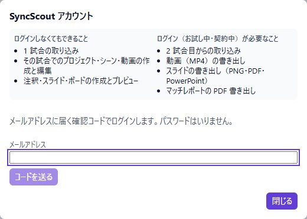

1. はじめに
アプリを入れて、ログインし、アプリの中で使う言葉を知るところまでです。
インストール
製品サイトのダウンロードから、お使いのパソコンに合うものを入れます。動画もスカウトファイルもパソコンの中だけで扱い、どこにも送りません。
Windows
- 「Windows 版をダウンロード」でインストーラー（
syncscout-video-editor-setup-…exe）を保存し、開きます。 - 「Windows によって PC が保護されました」と出たら、詳細情報を押してから実行を押します。アプリにまだ署名がないために出る表示です。
- 画面の案内に沿って進めると、デスクトップとスタートメニューに SyncScout Video Editor が入ります。
新しい版が出ると、アプリの上に「新しいバージョン … の準備ができました」と出ます。再起動して更新を押すか、アプリを閉じたときに更新されます。
Mac
- アップルメニューの「このMacについて」で、「チップ」が Apple M… なら Apple シリコン版、「プロセッサ」が Intel なら Intel 版をダウンロードします。
- ディスクイメージを開き、アプリを「アプリケーション」フォルダへドラッグします。
- 初めて開くときは、「システム設定」→「プライバシーとセキュリティ」→このまま開くで開きます。Apple の署名がまだないためです。
Mac では自動で更新されません。新しい版は製品サイトから入れ替えます。
ログインと 30 日のお試し
ログインしなくても、1 試合を取り込んで編集まで試せます。2 試合目からの取り込みと、すべての書き出しにはログインが要ります。
| ログインしなくてもできること | ログイン（お試し中・契約中）が必要なこと |
|---|---|
| 1 試合の取り込み その試合でのプロジェクト・シーン・動画の作成と編集 図形・スライド・ボードの作成とプレビュー |
2 試合目からの取り込み 動画（MP4）の書き出し スライドの書き出し（PNG・PDF・PowerPoint） マッチレポートの PDF 書き出し |
- ホーム画面の右上、「プロジェクト」の横のログインを押します。
- メールアドレスを入れてコードを送るを押し、届いた確認コードを入れます。パスワードはありません。コードが届かないときは迷惑メールのフォルダも見てください。
- 使うチームを選びます。
- 初めて使う：無料お試しを始めるで自分のチームができ、30 日間すべて使えます。カードの登録はいりません。お試しが終わっても自動で課金はされません。
- SyncScout をすでに使っている：チームの管理者から聞いたチーム ID と合言葉で参加します。チームの契約のまま使えます。

お試しや契約が終わったら
試合の追加、新しいプロジェクト、書き出しができなくなります。作ったプロジェクトはそのまま開いて編集でき、パソコンの中のデータが消えることはありません。契約は契約を確認から始められます。
インターネットにつながらない会場で
ログインの確認は、つながらない状態でも 30 日まで有効です。それを過ぎたら、一度インターネットにつないでアプリを開くと延びます。
アプリの中の言葉
| 言葉 | 意味 |
|---|---|
| 倉庫 | 取り込んだ試合（動画と DVW の組）の一覧です。パソコンに 1 つ作り、すべてのプロジェクトで使います。動画と DVW はコピーせず、もとの場所のまま使います。 |
| プロジェクト | 分析するチーム 1 つと、その試合の集まりです。チームごとに 1 つ作るのがお勧めです。 |
| プレー | DVW の 1 行（サーブ、レセプション、アタックなど）です。 |
| クリップ | プレーの前後を切り出した、動画の短い区間です。 |
| マーカー | クリップに付ける 1〜5 の番号です。シーンの中で、クリップをマーカーごとのまとまりに分けます。 |
| シーン | マーカーで分けたクリップの並びです。「エースのサーブ」「ミスしたレセプション」のような、見せたいテーマ 1 つ分です。 |
| 動画 | シーンを並べたもので、これを MP4 に書き出します。シーンの前にはタイトルカードが入ります。 |